八歲的我・暑假分享
Pollux從星星出發的閃亮暑假
大家好，我是 Pollux。這個暑假，我拉了低音提琴、練習電影配樂、組裝機器人，也和爸爸媽媽飛到了北海道。準備好跟我一起出發了嗎？
♫ 我的音樂播放清單
2 首・線上播放我的名字來自一顆星
大家好，我是 Pollux，今年八歲。
Pollux 中文叫作「北河三」，是雙子座中最明亮的一顆星。
在希臘神話裡，雙子座代表感情很好的兄弟 Castor 和 Pollux。
故事中，Pollux 希望能一直和兄弟在一起。後來，他們成為天空中的雙子座。
所以，我的名字不只代表一顆閃亮的星，也讓我想到勇敢、友愛和陪伴。
我很喜歡這個特別的名字！[1]
我在弦樂團拉 Double Bass
我現在是博愛弦樂團的 Double Bass 團員。
Double Bass 就是「低音提琴」。
低音提琴是弦樂團裡體積最大、聲音最低沉的樂器。
因為它很大，演奏的時候通常要站著，或坐在高腳椅上。
弦樂團主要有四種樂器：小提琴、中提琴、大提琴和低音提琴。
每一種都有不同的聲音。合在一起，就像大家一起合作說一個音樂故事。[2]
我練了《北極特快車》
暑假期間，我練習了電影《北極特快車》的主題曲。
這是一個充滿聖誕節氣氛、勇氣和想像力的故事。
音樂有時輕快，有時很壯觀，讓我覺得自己好像真的搭上火車，往冰天雪地的北極前進。[3]
剛開始，有些節奏和指法很困難。
我把困難的地方分成一小段、一小段，慢慢練習。
當大家一起合奏時，我覺得很開心，也很有成就感。
我自己組裝機器人
我還上了機器人課。
我先自己拼裝零件，再學習用程式語言控制它。
我可以告訴機器人往前走、轉彎，或完成指定的動作。
寫程式就像把清楚的指令，一步一步告訴機器人。
有時候，機器人沒有照我的想法行動，我就檢查零件和程式，找到問題再試一次。
這讓我學會耐心思考，也知道失敗一次沒有關係。
爸爸媽媽帶我去北海道
這個暑假，爸爸媽媽帶我從台灣搭飛機去日本北海道。
從熟悉的家出發，飛向北方，是我暑假裡很期待的一段旅程。
北海道的風景和天氣，跟台灣很不一樣。
旅行的時候，我看見新的地方，也和爸爸媽媽一起留下開心的回憶。
對我來說，旅行就像打開一本真的地理課本：可以用眼睛看、用腳走，也可以用心記住。

像 Pollux 星星一樣，勇敢學習、努力發光
這個暑假，我學習了音樂、低音提琴、機器人和程式，也和爸爸媽媽一起旅行。
我不但學到新知識，還學會耐心、合作，以及遇到困難時再試一次。
謝謝老師和同學聽我分享！
再看一次